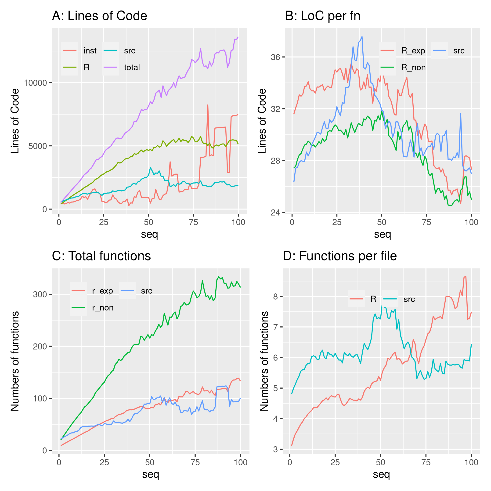

library ("pkgstatsAnalyses")
here <- here::here ()
v_data_dir <- file.path (here, "vignettes", "data")
fig05_png <- file.path (here, "vignettes", "figures", "fig05.png")
datafile <- file.path (here, "data-raw", "pkgstats-results.Rds")
x <- load_pkgstats_data (datafile, raw = TRUE, latest = FALSE) |>
group_by (package) |>
mutate (seq = seq_along (package))
x$loc_R [which (is.na (x$loc_R))] <- 0L
x$loc_src [which (is.na (x$loc_src))] <- 0L
x$loc_inst [which (is.na (x$loc_inst))] <- 0L
x$loc_total <- x$loc_R + x$loc_src + x$loc_inst
x$doclines_per_fn_exp_mn [which (!is.finite (x$doclines_per_fn_exp_mn))] <- NA
x_rel <- x |>
group_by (seq) |>
summarise (
loc = logmean (loc_total),
loc_R = logmean (loc_R, na.rm = TRUE),
loc_src = logmean (loc_src, na.rm = TRUE),
loc_inst = logmean (loc_inst, na.rm = TRUE),
n_fns_r_exported = logmean (n_fns_r_exported, na.rm = TRUE),
n_fns_r_not_exported = logmean (n_fns_r_not_exported, na.rm = TRUE),
n_fns_src = logmean (n_fns_src, na.rm = TRUE),
n_fns_per_file_r = logmean (n_fns_per_file_r, na.rm = TRUE),
n_fns_per_file_src = logmean (n_fns_per_file_src, na.rm = TRUE),
npars_exported_mn = logmean (npars_exported_mn, na.rm = TRUE),
npars_exported_md = logmean (npars_exported_md, na.rm = TRUE),
loc_per_fn_r_mn = logmean (loc_per_fn_r_mn, na.rm = TRUE),
loc_per_fn_r_md = logmean (loc_per_fn_r_md, na.rm = TRUE),
loc_per_fn_r_exp_mn = logmean (loc_per_fn_r_exp_mn, na.rm = TRUE),
loc_per_fn_r_exp_md = logmean (loc_per_fn_r_exp_md, na.rm = TRUE),
loc_per_fn_r_not_exp_mn = logmean (loc_per_fn_r_not_exp_mn, na.rm = TRUE),
loc_per_fn_r_not_exp_md = logmean (loc_per_fn_r_not_exp_md, na.rm = TRUE),
loc_per_fn_src_mn = logmean (loc_per_fn_src_mn, na.rm = TRUE),
loc_per_fn_src_md = logmean (loc_per_fn_src_md, na.rm = TRUE),
doclines_per_fn_exp_mn = logmean (doclines_per_fn_exp_mn, na.rm = TRUE),
doclines_per_fn_exp_md = logmean (doclines_per_fn_exp_md, na.rm = TRUE),
doclines_per_fn_not_exp_mn = logmean (doclines_per_fn_not_exp_mn, na.rm = TRUE),
doclines_per_fn_not_exp_md = logmean (doclines_per_fn_not_exp_md, na.rm = TRUE),
docchars_per_par_exp_mn = logmean (docchars_per_par_exp_mn, na.rm = TRUE),
docchars_per_par_exp_md = logmean (docchars_per_par_exp_md, na.rm = TRUE))
x_rel |>
select (c (seq, loc, loc_R, loc_src, loc_inst)) |>
rename (total = loc,
R = loc_R,
src = loc_src,
inst = loc_inst) |>
filter (seq <= 100) |>
pivot_longer (c (total, R, src, inst)) |>
rename (type = name, number = value) |>
ggplot (aes (x = seq, y = number, colour = type)) +
geom_line () +
#geom_smooth (method = "loess", formula = "y ~ x", se = FALSE, lwd = 1) +
theme (legend.title = element_blank(),
legend.position = c (0.25, 0.85),
legend.background = element_rect(fill='transparent', colour='transparent')) +
ylab ("Lines of Code") +
guides (color = guide_legend (ncol = 2)) +
ggtitle ("A: Lines of Code") -> p1
x_rel |>
select (c (seq, loc_per_fn_r_exp_mn, loc_per_fn_r_not_exp_mn,
loc_per_fn_src_mn)) |>
rename (R_exp = loc_per_fn_r_exp_mn,
R_non = loc_per_fn_r_not_exp_mn,
src = loc_per_fn_src_mn) |>
filter (seq <= 100) |>
pivot_longer (c (R_exp, R_non, src)) |>
rename (type = name, number = value) |>
ggplot (aes (x = seq, y = number, colour = type)) +
geom_line () +
#geom_smooth (method = "loess", formula = "y ~ x", se = FALSE) +
theme (legend.title = element_blank(),
legend.position = c (0.7, 0.85),
legend.background = element_rect(fill='transparent', colour='transparent')) +
ylab ("Lines of Code") +
guides (color = guide_legend (ncol = 2)) +
ggtitle ("B: LoC per fn") -> p2
x_rel |>
select (c (seq, n_fns_r_exported, n_fns_r_not_exported, n_fns_src)) |>
rename (r_exp = n_fns_r_exported,
r_non = n_fns_r_not_exported,
src = n_fns_src) |>
filter (seq <= 100) |>
pivot_longer (c (r_exp, r_non, src)) |>
rename (type = name, number = value) |>
ggplot (aes (x = seq, y = number, colour = type)) +
geom_line () +
#geom_smooth (method = "loess", formula = "y ~ x", se = FALSE) +
theme (legend.title = element_blank(),
legend.position = c (0.3, 0.85),
legend.background = element_rect(fill='transparent', colour='transparent')) +
ylab ("Numbers of functions") +
guides (color = guide_legend (ncol = 2)) +
ggtitle ("C: Total functions") -> p3
x_rel |>
select (c (seq, n_fns_per_file_r, n_fns_per_file_src)) |>
rename (R = n_fns_per_file_r,
src = n_fns_per_file_src) |>
filter (seq <= 100) |>
pivot_longer (c (R, src)) |>
rename (type = name, number = value) |>
ggplot (aes (x = seq, y = number, colour = type)) +
geom_line () +
#geom_smooth (method = "loess", formula = "y ~ x", se = FALSE) +
theme (legend.title = element_blank(),
legend.position = c (0.5, 0.85),
legend.background = element_rect(fill='transparent', colour='transparent')) +
ylab ("Numbers of functions") +
guides (color = guide_legend (ncol = 2)) +
ggtitle ("D: Functions per file") -> p4
knitr::include_graphics (fig05_png)

Fig. 5 Development of code metrics per release of each package.
x2 <- x_rel |>
filter (seq > 50 & seq <= 100) |>
select (seq, loc_per_fn_r_exp_mn, loc_per_fn_r_not_exp_mn, loc_per_fn_src_mn)
s_r_exp <- lm (loc_per_fn_r_exp_mn ~ seq, data = x2)$coefficients [2]
s_r_non <- lm (loc_per_fn_r_not_exp_mn ~ seq, data = x2)$coefficients [2]
s_src <- lm (loc_per_fn_src_mn ~ seq, data = x2)$coefficients [2]
#c (1 / s_r_exp, 1 / s_r_non, 1 / s_src)